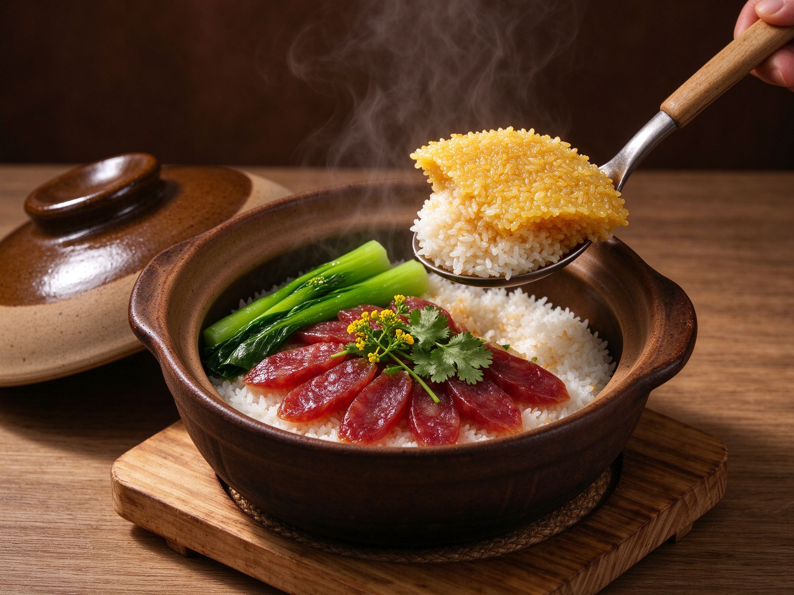

Cantonese Claypot Rice (Bao Zai Fan): The Crust Is the Point
Claypot rice looks like a simple idea — rice, toppings, one pot — but every Cantonese household argues about one thing: the fan ziu, the golden crust at the bottom. Too little heat and you get plain steamed rice. Too much and the whole pot tastes of scorched smoke. The difference is a heat sequence you can control exactly, in an ordinary kitchen, with a pot you already own.
What You're Actually Making
Rice steams first, toppings cook on top of it in the last minutes, and then the bottom layer is deliberately dried and toasted into a crisp sheet. You eat the rice, then scrape the crust out last — it's the best part, and in restaurants it's often fought over.
Three things make or break it:
- Soaked rice. Soak long-grain rice 30 minutes so the grains cook through before the bottom burns.
- Slightly less water than you'd normally use — 1.1–1.2 parts water to 1 part rice. Less water sounds wrong for rice; here it's what lets the crust form.
- Heat in three stages: high to boil, medium to absorb, low to toast.
Ingredients (Serves 2)
- 1 cup long-grain rice (jasmine or Cantonese-style), rinsed and soaked 30 min
- 1–1.1 cups water
- 1 pair cured sausages (lap cheong), sliced on the bias
- 2 scallions, sliced; a small handful of cilantro
- 2 tsp oil, plus a little for the pot
The finishing sauce
- 2 tbsp light soy sauce
- 1 tbsp dark soy sauce (for color — this is where the amber tone comes from)
- 1 tsp sesame oil
- 1 tsp sugar, dissolved in 1 tbsp hot water
Sweet soy sauce is the standard drizzle, but the homemade mix above is closer to what a Cantonese kitchen actually pours on: mostly light soy, a splash of dark for color, sugar for roundness. Never pour it in at the start — the rice would cook in it and turn brown all through.
Method
- Rub the inside of a clay pot, thick-walled saucepan, or cast-iron pot with a little oil. Drain the soaked rice and spread it in the pot with the water. Bring to a full boil over medium-high heat, uncovered, 4–5 minutes.
- When the water level drops to just below the rice surface and craters appear, reduce heat to low, cover, and cook 8–10 minutes until the water is absorbed and the surface is pitted with small holes.
- Lay the sausage slices over the rice, cover, and cook on the lowest heat 8–10 minutes. This finishes the rice and heats the topping through.
- Now the crust: raise heat to medium for 2–3 minutes, listening for a light crackle. Turn the pot a quarter turn every 30–40 seconds so the bottom browns evenly rather than in one scorched spot.
- Add a teaspoon of oil around the rim if it sounds quiet rather than crackling — that's what crisps the base.
- Turn off the heat and let the pot rest, still covered, 5 minutes. Meanwhile, blanch the greens in salted boiling water for 30 seconds.
- Uncover, spoon the sauce over the top, add greens, scallions, and cilantro. Serve at the table, scraping the crust up last.
Dialing In the Crust
Because every stove and pot runs differently, calibrate once: after the rest, lift a spoonful from the center. You're looking for a golden, brittle sheet, not white rice or black char.
- No crust at all? The heat was too low or there wasn't enough oil. Next time, finish 1–2 minutes longer on medium.
- Bitter and black: the pot was too thin, or the heat too high. Cut the toasting stage by a minute and rotate more often; a heavy-bottomed pot buys you a lot of forgiveness.
- Rice still hard at the center: it needed more water or a longer soak. Add 2 tbsp hot water, cover, and steam 5 more minutes before the toasting stage.
Variations Worth Trying
- Char siu and chicken: swap the sausage for sliced char siu or marinated chicken thigh; add the chicken raw so it steams through.
- Preserved vegetable and pork: a spoonful of pickled mustard greens with minced pork patty on top — the most everyday version.
- Mushroom and tofu: rehydrated shiitake with a soy-and-sesame marinade makes a convincing vegetarian pot for plant-based eating.
Small Habits That Matter
- Don't stir the rice at any point. Stirring breaks the crust layer before it forms.
- Keep the lid on. Every peek releases the steam that's cooking the top layer.
- Rest before serving. Five minutes off heat finishes the grains and makes the crust easier to lift whole.
- Serve the sauce at the table, not in the pot — so each person gets the amount they want, and the crust stays crisp.
Claypot rice is one of the few dishes where the technique is entirely audible and visible: a boil, a quiet simmer, then a crackle. Once you know what each stage sounds like, you can make it without a timer.